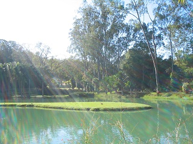
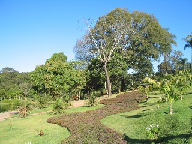

ARTIGOS DE CUNHO AMBIENTAL
A importância da aplicação do desenvolvimento sustentável e da educação ambiental no Corpo de Bombeiros do Paraná. Revista Científica Multidisciplinar Núcleo do Conhecimento. Ano 05, Ed. 01, Vol. 05, pp. 93-113. Janeiro de 2020. ISSN: 2448-0959
Link para o artigo
FERREIRA, Maria da Consolação. LOPES, Joselaine Ferreira. O Crescimento Populacional e os Impactos Ambientais. Revista Científica Multidisciplinar Núcleo do Conhecimento. Ano 05, Ed. 06, Vol. 02, pp. 188-195. Junho de 2020. ISSN 2448-0959
Link para o artigo
LOPES, Patrícia Rosária De Oliveira. SANTOS, Rafael Silva Dos. O impacto econômico – ecológico na utilização do biodiesel oriundo do descarte de óleo residual de fritura como combustível na Frota da Polícia Militar do Estado do Rio De Janeiro. Revista Científica Multidisciplinar Núcleo do Conhecimento. Ano 04, Ed. 07, Vol. 14, pp. 05-23. Julho de 2019. ISSN: 2448-0959
Link para o artigo
RODRIGUES, Fábio. Diagnóstico de resíduos sólidos para o plano de gerenciamento integrado de coleta seletiva do Município de Manacapuru/AM. Revista Científica Multidisciplinar Núcleo do Conhecimento. Ano 04, Ed. 07, Vol. 01, pp. 121-136. Julho de 2019. ISSN: 2448-0959
Link para o artigo
SOUZA, Keulle Oliveira da. Et al. Alterações socioambientais e na saúde decorrentes da implantação de projetos de mineração em Barcarena-PA: O desenvolvimento e suas contradições na Amazônia, Brasil. Revista Científica Multidisciplinar Núcleo do Conhecimento. Ano 04, Ed. 12, Vol. 08, pp. 29-39. Dezembro de 2019. ISSN: 2448-0959
Link para o artigo
VASQUES, Eltiza Rondino. TETTO, Alexandre França. Abordagem da Questão Ambiental no Ensino Fundamental, Médio e na Educação de Jovens e Adultos. Revista Educação Ambiental em Ação. Ano XVI, Nº 61. Setembro-Novembro/2017. ISSN 1678-0701
Link para o artigo
VASQUES, Eltiza Rondino. ROCHA, Yuri Tavares. Uso Potencialmente Poluidor como variável de qualidade ambiental urbana, distrito da Liberdade, São Paulo. IX Congresso Brasileiro de Gestão Ambiental. Anais... Novembro de 2019.
Link para o artigo

Inhotim - MG
